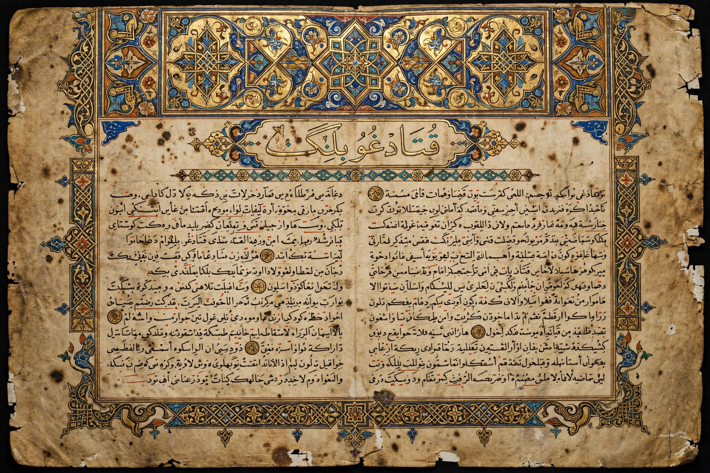

| Kutadgu Bilig | |
|---|---|
| Author | Yūsuf Balasaguni (Yusuf Khass Hajib) |
| Date | c. 1070 (11th century) |
| Language | Karluk (Middle Turkic / Turkic Khakani) |
| Place | Kashgar, Karakhanid Khanate |
| Form | Masnavi poem, c. 6,645 couplets |
The Kutadgu Bilig (Middle Turkic: Qutadğu Bilig, "Wisdom Which Brings Happiness/Fortune") is an 11th-century work of Turkic wisdom literature written by the Karakhanid scholar Yūsuf Balasaguni (Yusuf Khass Hajib of Balasagun) and presented to the Karakhanid prince of Kashgar, published around 1070. It is regarded as the first major work of Islamic Turkic literature and a foundational monument of the Turkic written heritage.
Written in rhyming couplets (masnavi form) in the mutaqarib metre — the first known use of the Persianate masnavi in Turkic — the poem is framed as a dialogue among four allegorical personages: the ruler Kün Togdı ("Rising Sun"), who embodies Justice/Law; his vizier Ay Toldı ("Full Moon"), Fortune; the sage Ögdülmiş ("Praised One"), Intellect; and the ascetic Odgurmış ("Awakened One"), Man's Last End or Contentment. Through their debates the work expounds a mirror-for-princes (Fürstenspiegel) on kingship, the duties of officials and classes, ethics, administration, warfare, marriage, etiquette and the transience of worldly fortune, fusing Turkic steppe ideals with Islamic and Persianate political philosophy.
Three medieval manuscripts survive: the Vienna (Herat) copy of 1439 in Uyghur script, the Cairo copy in Arabic script, and the Fergana (Namangan) copy, discovered in the 20th century. The first scholarly edition was by Ármin Vámbéry and Wilhelm Radloff. UNESCO marked 2019–2020 with celebrations of the poem's 950th anniversary; it remains a canonical text in Turkey, Kyrgyzstan, Kazakhstan and Uzbekistan, where Yusuf Balasaguni is venerated as a national sage.